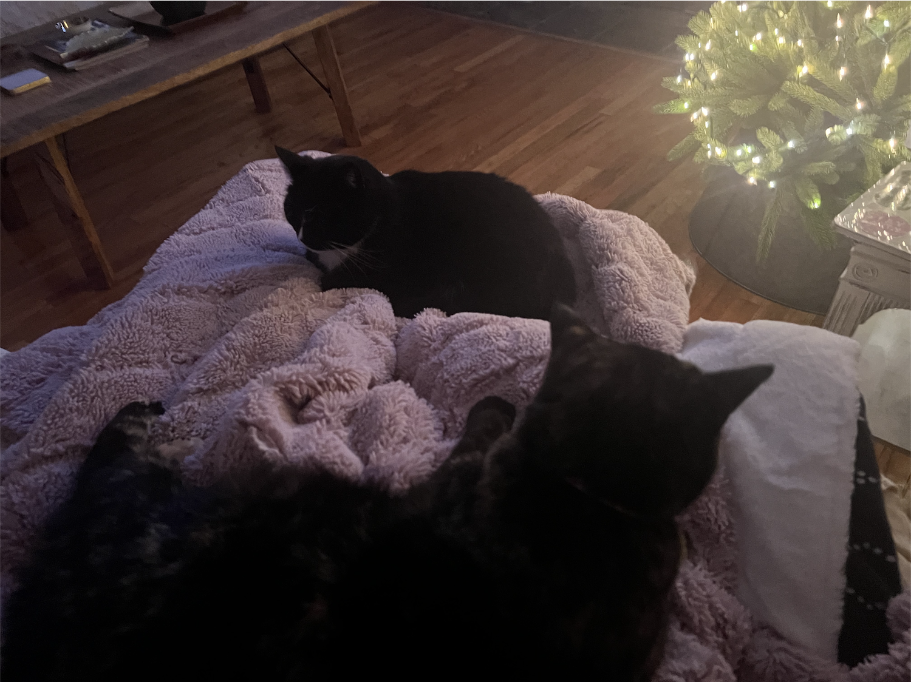
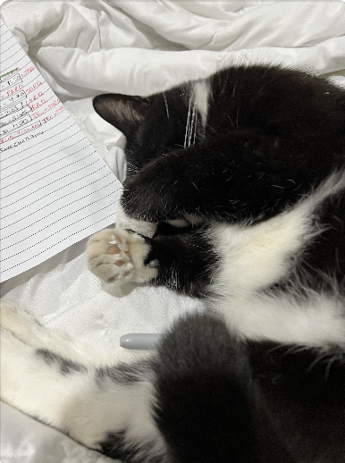
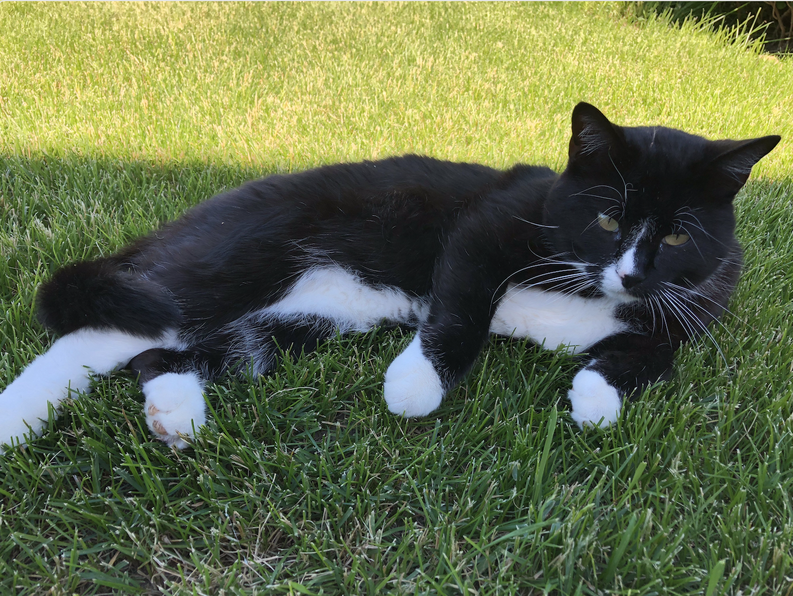

<!doctype html>
<html lang="en">

<head>
    <meta charset="utf-8">
    <meta name="viewport" content="width=device-width, initial-scale=1">
    <link href="https://stackpath.bootstrapcdn.com/bootstrap/4.5.2/css/bootstrap.min.css" rel="stylesheet">
    <title>Bootstrap demo</title>
    <link rel="stylesheet" href="assets/css/styles.css">

    <link rel="preconnect" href="https://fonts.googleapis.com">
    <link rel="preconnect" href="https://fonts.gstatic.com" crossorigin>
    <link href="https://fonts.googleapis.com/css2?family=Rubik+Beastly&display=swap" rel="stylesheet">
</head>

</html>

<body>
<div class="container">
    <hr> 
</div>

    <div class="container">
        <div class="row">
            <div class="col-12 col-md-12">
                <h1 style="font-family: 'Rubik Beastly', sans-serif;" class="mr-pickles-title text-center">The Mr. Pickles Times</h1>
                </div>
            </div>
        </div>
    </div>

   <div class="container">
        <hr>
   </div>
    
    <div class="container my-3">
        <div class="row">
            <div class="col-12 col-md-7">
                <h2>Ready For His Closeup</h2>
                <p>Mr. Pickles is a very spoiled tuxedo cat. He is always ready for his closeup, especially today. He
                    is turning eight years old this upcoming February. He found his home in February 2019 after living
                    in his future family’s wood pile as a stray kitten. Very skinny and skittish, he was slowly
                    introduced into the house. Now, he acts like he owns the place and is extremely ungrateful. But,
                    he’s so cute! Read more about Mr. Pickles (link)</p>
            </div>
            <div class="col-12 col-md-5">
                <div class="closeup">
                    
                </div>
            </div>
        </div>
    </div>

    <div class="container my-3">
        <div class="row">
            <div class="col">
                <h2>The Duality of Mr. P</h2>
                <p>Mr. Pickles can be a sweet cat, but only on his own terms. Sometimes, he loves his little sister
                    Lilo, a four year old Tortise Shell cat. At times you can find them cuddling on the couch or on one
                    of their many cat beds. But other times, you can find Mr. Pickles telling Lilo to go away, and she
                    does. She runs to the basement. Visit our Lilo & Mr. P Gallery (link) </p>
            </div>
            <div class="col-12 col-md-5">
                <div class="duality">
                    

                </div>
            </div>

            <div class="container">
                <hr>
            </div>

            <div class="container">
                <div class="row">
                    <div class="col-12 col-md-4 col-xl-4">
                        <div class="table">
                            
                        </div>
                        <h3>Trending Cat Foods</h3>
                        <p>What’s Mr. P sampling this week? Top contenders include Fancy Feast, which is a classic.
                            Notably, Royal Canin is praised for its tailored nutrition, while Hill's Science Diet offers
                            health-focused formulas. Purina Pro Plan is another beloved choice, known for its variety
                            and taste. </p>
                    </div>
                    <div class="col-12 col-md-4 col-xl-4">
                        <div class="napping">
                            
                        </div>
                        <h3>Cat Naps Rising Quickly</h3>
                        <p>In a phenomenon that has researchers and pet owners alike buzzing, recent studies reveal that
                            cats are taking naps more than ever. With their love for cozy corners and sunlit spots,
                            these furry companions are capitalizing on the art of relaxation.</p>
                    </div>
                    <div class="col-12 col-md-4 col-xl-4">
                        <div class="napping">
                            
                        </div>
                        <h3>CAT-egory 2 Hurricane</h3>
                        <p>Cats everywhere are bracing for a category 2 hurricane hitting the eastern coast this
                            weekend. Storm surges will rise up to 10 feet on some coasts. Experts are advising cats to
                            get their owners packed up and drive the car somewhere else. </p>
                    </div>
                </div>
            </div>

<div class="container">
    <hr>
</div>


</body>

</html>